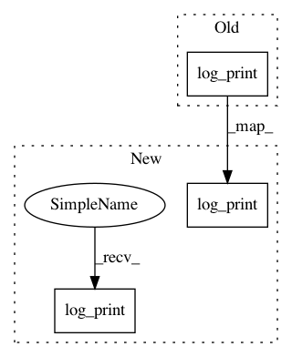

6bb344bff4b94300eb0fa74700b19a6743a67d3e,compile.py,,,#,25
Before Change
util.log_print(colored("Oxford Inference Compilation " + util.version, "white", "on_blue", attrs=["bold"]))
util.log_print("Compilation Mode")
util.log_print("")
util.log_print("Started " + str(datetime.datetime.now()))
util.log_print("")
util.log_print("Running on PyTorch " + torch.__version__)
util.log_print("")
After Change
util.log_print()
util.log_print(colored("█ Oxford Inference Compilation " + util.version, "blue", attrs=["bold"]))
util.log_print()
util.log_print("Compilation Mode")
util.log_print()
util.log_print("Started " + str(datetime.datetime.now()))
util.log_print()
util.log_print("Running on PyTorch " + torch.__version__)
util.log_print()
util.log_print("Command line arguments:")
util.log_print(" ".join(sys.argv[1:]))
util.log_print()
util.log_print(colored("█ Compilation configuration", "blue", attrs=["bold"]))
util.log_print()
util.log_print(pformat(vars(opt)))
util.log_print()
In pattern: SUPERPATTERN
Frequency: 3
Non-data size: 3
Instances
Project Name: pyprob/pyprob
Commit Name: 6bb344bff4b94300eb0fa74700b19a6743a67d3e
Time: 2017-04-05
Author: atilimgunes.baydin@gmail.com
File Name: compile.py
Class Name:
Method Name:
Project Name: pyprob/pyprob
Commit Name: 835cafd0a27cacf658f85cff13cac85ec68e41e5
Time: 2017-04-05
Author: atilimgunes.baydin@gmail.com
File Name: compile.py
Class Name:
Method Name:
Project Name: pyprob/pyprob
Commit Name: e56808e816b2d40bc31339eb64474d771349aa50
Time: 2017-04-29
Author: atilimgunes.baydin@gmail.com
File Name: infcomp/infer.py
Class Name:
Method Name: main